Next: Number Systems Up: Matrices and Analytic Geometry Previous: Matrices and Analytic Geometry Contents Index
The symbols used by mathematicians (the notation) are very important for clear presentation. A good notation even can lead to the development of ideas. Perhaps the most famous example of this is the notation invented by Leibniz for calculus which eventually displaced the English form developed by Newton.
People who are interested in learning mathematics often have difficulty with the notation. This difficulty can usually be erased if they keep in mind that new symbols are used to save reading time and writing space. An example is given below.
Suppose we wished to define a mathematical formula to express
the total price of several computer systems. Using algebra
we would let  the cost of one computer system. Since
the cost of one computer system. Since
 is an arbitrary cost we use subscripts to refer to
individual computer systems. If we had four computer systems we could
write a list:
is an arbitrary cost we use subscripts to refer to
individual computer systems. If we had four computer systems we could
write a list:
the cost of the first system
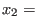 the cost of the second systemthe cost of the third system
the cost of the fourth system
To be even more abstract we could say that 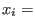
the cost of the 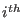
computer system, for
 or
or  . In spoken English, we refer to
. In spoken English, we refer to  as
x sub i. We also refer to each
as
x sub i. We also refer to each  as an entry of an ordered list.
as an entry of an ordered list.
We would say that the total cost of these four computer systems is
To take advantage of the benefits of mathematical notation we write:
In spoken form we might refer to this as sum with i from 1 to 4 of x sub i equals x total.
We call an index. Its value gives us the position of an entry. When it is clear what they are talking about some authors omit the index and its range from the sum notation 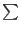 . They would use
Here
We let
range from  to
to  . A range starting at
. A range starting at  is most
common but not necessary1.1.
The total cost of two computers, the second
and the third, would be written
is most
common but not necessary1.1.
The total cost of two computers, the second
and the third, would be written
When faced with a new symbol in a mathematics text the student is advised to write out several examples of the meaning using notation already known. When one becomes really irked with writing out the same thing over and over one can then appreciate the reason for adopting the use of the new symbol.
The use of subscripts actually saves a lot of writing, especially when we deal with matrices. As was mentioned in the preface, a matrix is a rectangular arrangement of numbers or symbols (which usually stand for numbers). An example of a matrix is given below.
Subscripts are used to refer to the entry. Examples are
The first subscript of 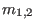
refers to the first row of the
matrix  . The second subscript,
. The second subscript,  , refers to the second
column of the matrix. Horizontal lists of numbers are rows and
vertical lists of numbers are columns.
, refers to the second
column of the matrix. Horizontal lists of numbers are rows and
vertical lists of numbers are columns.
You may have noticed that we used lowercase  to refer to an entry of a
matrix and the uppercase
to refer to an entry of a
matrix and the uppercase  to refer to the matrix itself. In this text we
will use capital letters to name matrices.
to refer to the matrix itself. In this text we
will use capital letters to name matrices.
Also notice the difference between subscripts and superscripts. For example,
in the expression  ,
,  is a superscript. Superscripts are used to indicate
powers of numbers (the number of times we multiply
a number by itself). For instance, 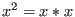
,
is a superscript. Superscripts are used to indicate
powers of numbers (the number of times we multiply
a number by itself). For instance, 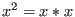
,  and
and
 .
.
We can use the sum notation to refer to entries in a matrix. For example:

would give us the total of the two entries in the second row of our matrix
The expression
would give us the total of all the entries in the matrix
and then expanding the last sum sign:
You should notice that if we had exchanged the order of the two sum signs, we would still get the same answer.

would expand to
which totals to the same value. (This is because the order in which we add terms doesn't matter for ordinary numbers. We will have more to say about this later.)
A general matrix  with
with  rows and
rows and  columns is usually written as
columns is usually written as

We say that matrix  is
is  by
by  or has order
or has order  by
by  .
We would write this as
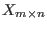
. A matrix
.
We would write this as
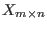
. A matrix  that had
that had  rows
and
rows
and  columns would be denoted as
columns would be denoted as
 .
.
A matrix  and a matrix 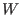
are said to be equal if they are
of the same order and
and a matrix 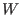
are said to be equal if they are
of the same order and
 .
.
In order to save ink and pixels, if a matrix has just one row or one column, only one subscript will be used. Some examples are
Furthermore, any matrix
 (any matrix with only one entry) will
simply be referred to as another number
(any matrix with only one entry) will
simply be referred to as another number  without any subscripts.
without any subscripts.

 ?
?